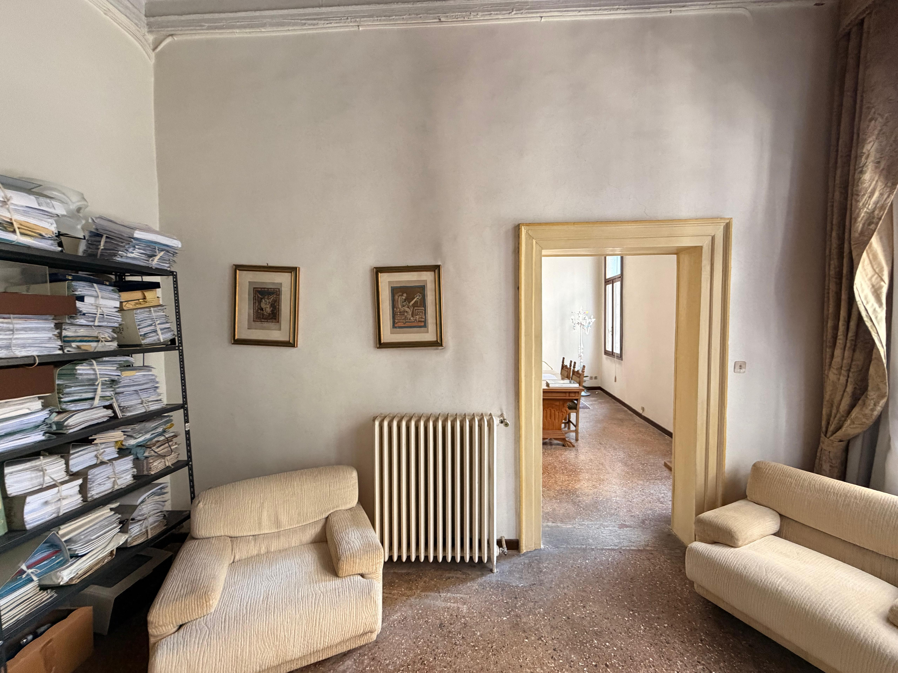
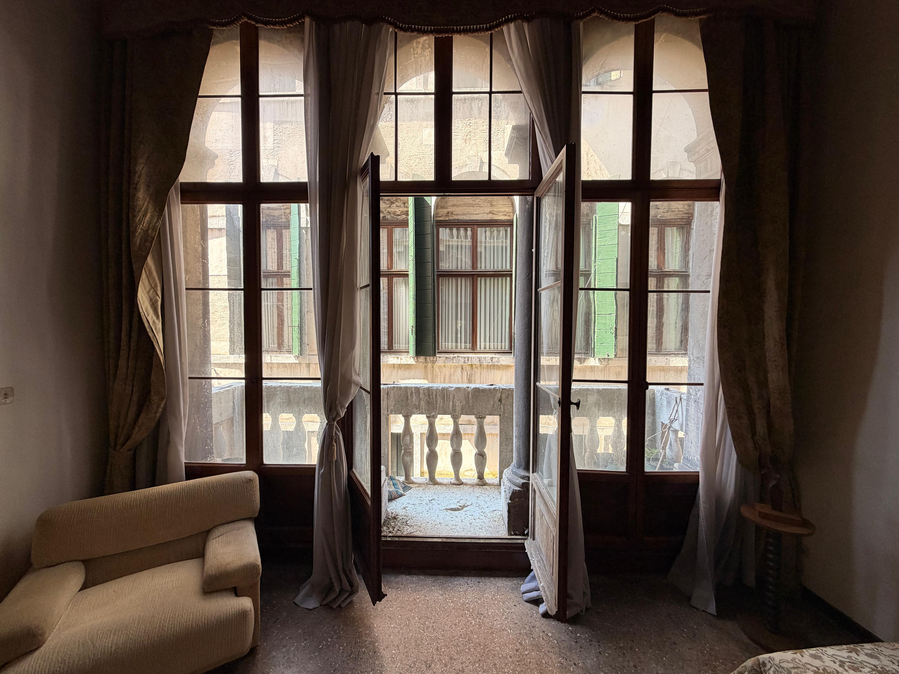
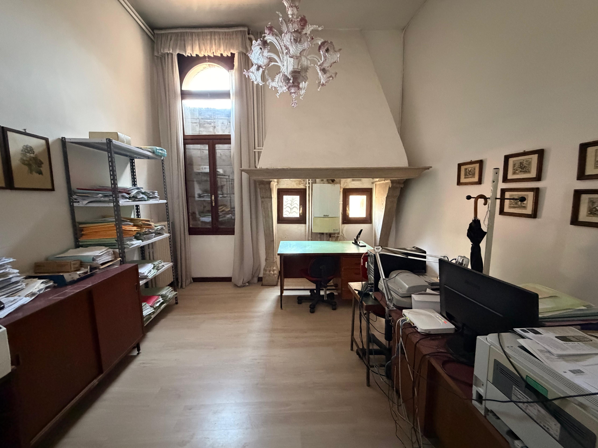
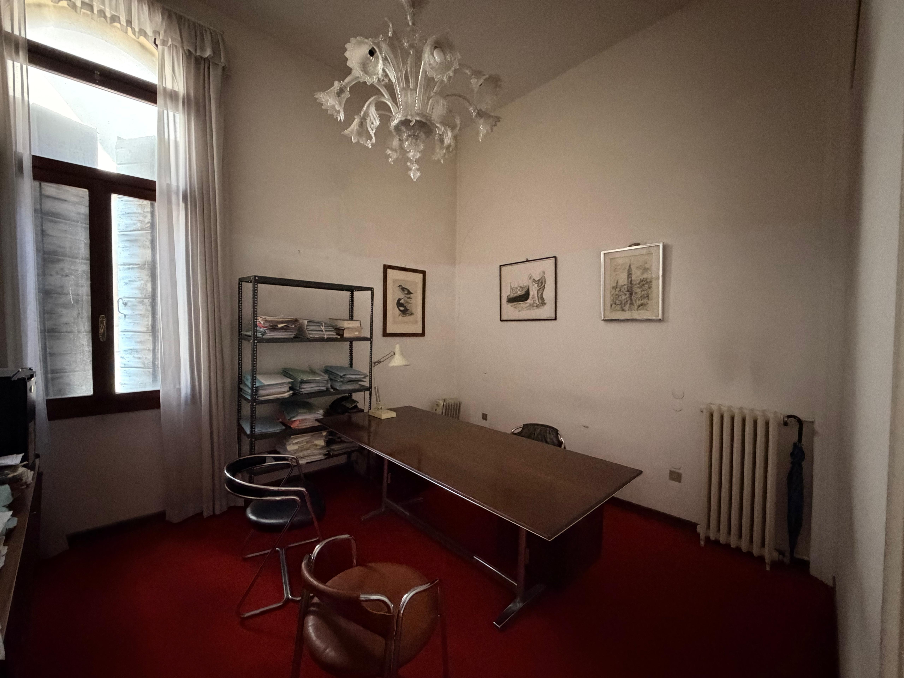
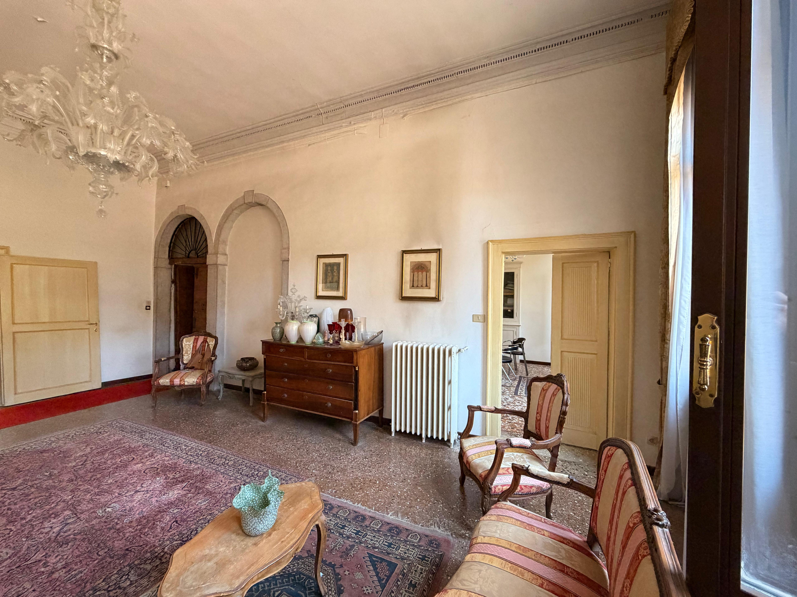
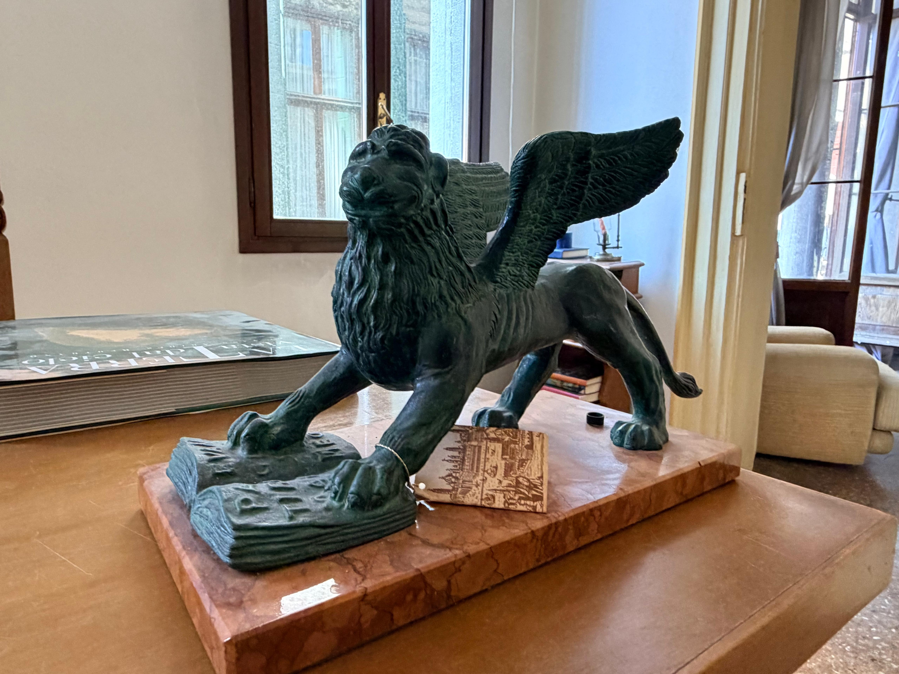
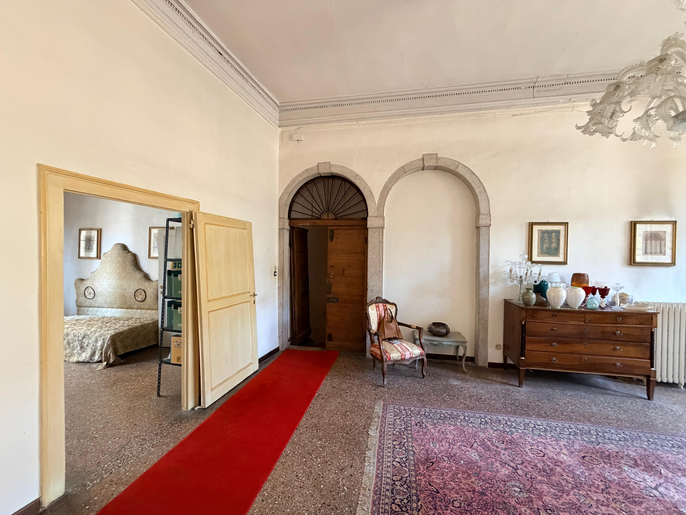
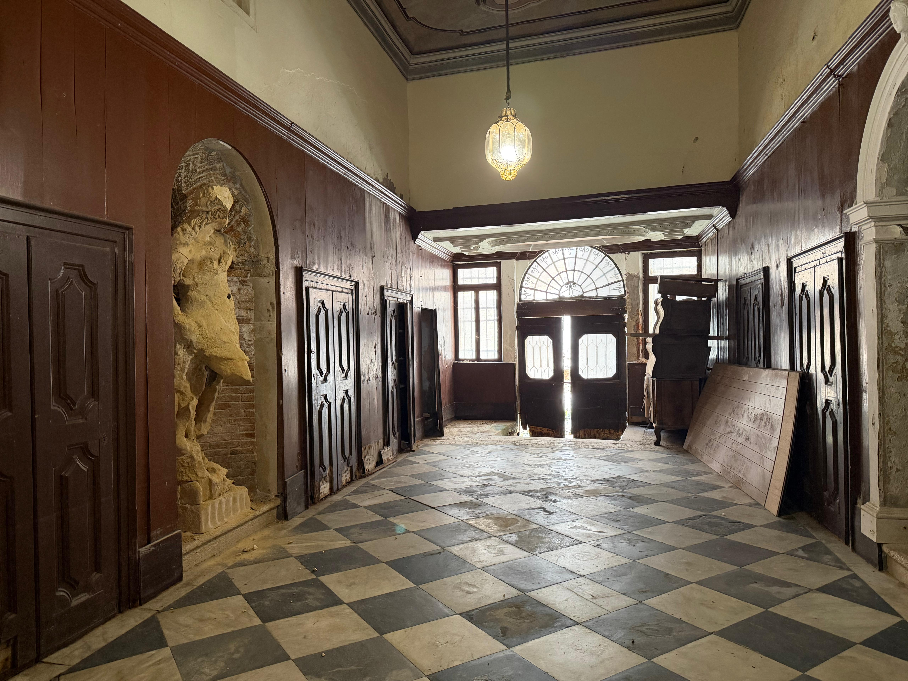
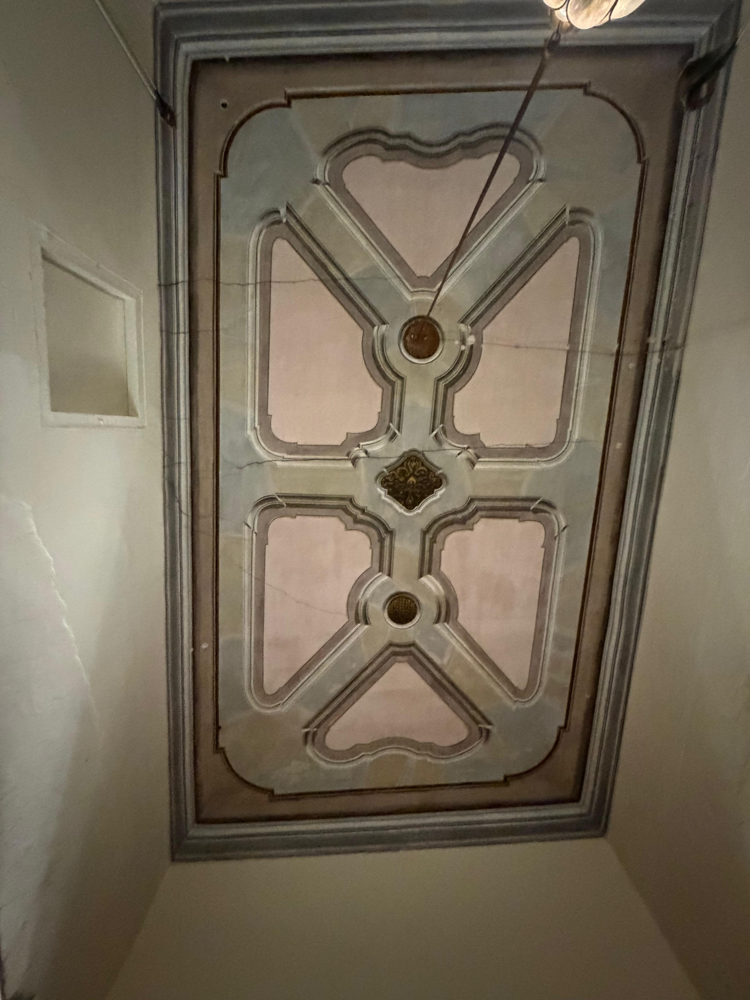

212 m²
Superficie
3 Piani
Terra, 1° e 2°
Riva Privata
Accesso Acqua
Canal Grande
Vista
Situata nel cuore del Sestiere di San Marco, a pochi passi dall'elegante Campo Sant'Angelo, questa proprietà di 212 mq accoglie i suoi ospiti con una solennità d'altri tempi. L'ingresso indipendente è impreziosito da una maestosa statua d'epoca, un dettaglio architettonico che conferisce immediato prestigio e carattere alla dimora, richiamando i fasti della nobiltà veneziana.
A differenza di molte proprietà nel centro storico, questa dimora vanta una tripla esposizione essendo libera su due lati. Questa caratteristica, unita alle ampie aperture, rende l'immobile eccezionalmente luminoso in ogni momento della giornata, creando un'atmosfera ariosa e accogliente in tutti i suoi ambienti distribuiti sui piani Terra, Primo e Secondo.
Il legame con l'elemento liquido è totale: la proprietà dispone di una riva d'acqua privata, permettendo un accesso diretto e riservato tramite taxi acqueo o imbarcazione propria. Dai piani superiori, un grazioso balcone si affaccia sul canale, regalando uno scorcio suggestivo che si apre fino alla maestosità del Canal Grande.
Attualmente adibito a ufficio ma con la possibilità concreta di cambio di destinazione d'uso in residenziale, l'immobile rappresenta una «tela bianca» per un restauro d'eccellenza. La struttura si presta alla creazione di una residenza di ultra lusso dove la luce, l'indipendenza e il fascino storico convivono in perfetta armonia.








